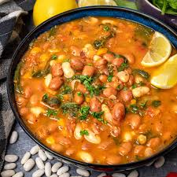
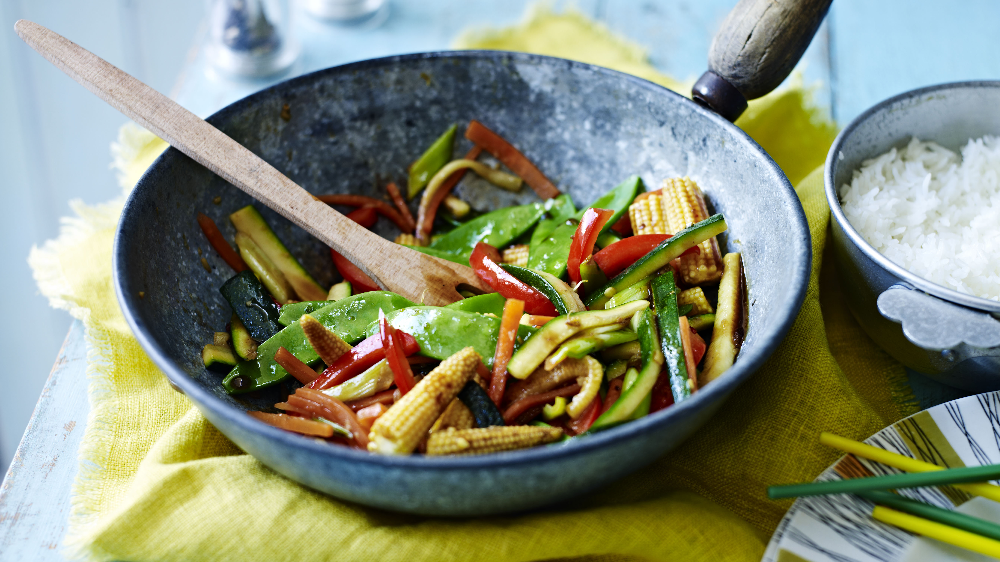
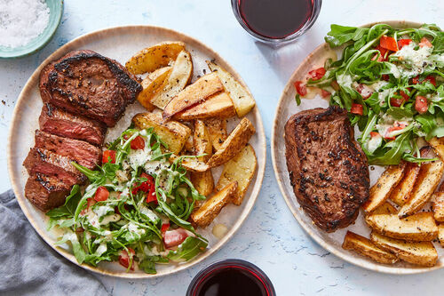

In a large pot, bring 4 cups of water to a boil. Add a pinch of salt if desired.
Gradually add the maize flour to the boiling water while stirring continuously with a wooden spoon to avoid lumps.
Reduce the heat to medium-low and keep stirring until the mixture thickens and pulls away from the sides of the pot. This should take about 5-10 minutes.
Once the ugali is firm and well-cooked, remove it from the heat. Use the wooden spoon to shape it into a round loaf. Serve hot.
Meat Stew Instructions:
In a pot, heat the vegetable oil over medium heat. Add the beef pieces and brown them on all sides.
Add the chopped onion, garlic, and ginger to the pot. Cook until the onions are soft and translucent.
Add the chopped tomatoes and bell pepper (and optional potatoes and carrots if using). Cook for a few minutes until the tomatoes break down.
Pour in the water or beef broth, add salt, pepper, and optional curry powder. Stir well, bring to a boil, then reduce the heat to low. Cover and simmer for about 30-45 minutes, or until the meat is tender and the vegetables are cooked through.
Taste and adjust the seasoning if necessary. Serve the meat stew hot alongside the ugali.

How to make bean soup
1 cup dried beans (any variety), soaked overnight
2 tablespoons olive oil
1 large onion, chopped
2 cloves garlic, minced
2 carrots, chopped
2 celery stalks, chopped
1 bell pepper, chopped
1 can diced tomatoes
6 cups vegetable broth
1 teaspoon dried thyme
1 teaspoon dried oregano
Salt and pepper to taste
Optional: fresh parsley for garnish
Instructions:
In a large pot, heat the olive oil over medium heat. Add the chopped onion and garlic, and sauté until the onion is translucent.
Add the carrots, celery, and bell pepper to the pot. Cook for another 5 minutes, stirring occasionally.
Drain and rinse the soaked beans. Add them to the pot along with the diced tomatoes, vegetable broth, thyme, and oregano. Stir to combine.
Bring the soup to a boil, then reduce the heat to low. Cover and simmer for 1-1.5 hours, or until the beans are tender.
Season with salt and pepper to taste. If desired, garnish with fresh parsley before serving.

How to prepare stirfry with rice
2 cups cooked rice
1 lb (450g) chicken breast or beef, sliced thinly
2 tablespoons vegetable oil
1 large onion, sliced
2 cloves garlic, minced
1 bell pepper, sliced
1 carrot, julienned
1 cup broccoli florets
1 cup snap peas
2 tablespoons soy sauce
1 tablespoon oyster sauce
1 tablespoon cornstarch mixed with 2 tablespoons water
Salt and pepper to taste
Optional: red pepper flakes for heat
Instructions:
Heat the vegetable oil in a large skillet or wok over medium-high heat.
Add the sliced chicken or beef and cook until browned and cooked through. Remove from the skillet and set aside.
In the same skillet, add the onion and garlic. Cook until the onion is translucent.
Add the bell pepper, carrot, broccoli, and snap peas. Stir-fry for about 5-7 minutes, until the vegetables are tender-crisp.
Return the cooked chicken or beef to the skillet. Stir in the soy sauce, oyster sauce, and cornstarch mixture. Cook for another 2-3 minutes, until the sauce thickens and coats the meat and vegetables.
Season with salt and pepper to taste. Add red pepper flakes if desired for heat.
Serve the stir-fry hot over the cooked rice.

How to prepare Nyake with Fries
1 lb (450g) nyake (local fish), cleaned and scaled
2 tablespoons vegetable oil
1 lemon, sliced
Salt and pepper to taste
1 teaspoon paprika
4 large potatoes, cut into fries
Vegetable oil for frying
Salt to taste for fries
Optional: fresh herbs for garnish
Instructions:
Preheat your oven to 400°F (200°C).
Place the cleaned nyake on a baking sheet. Drizzle with vegetable oil and season with salt, pepper, and paprika. Place lemon slices on top of the fish.
Bake in the preheated oven for about 20-25 minutes, or until the fish is cooked through and flakes easily with a fork.
While the fish is baking, heat vegetable oil in a deep fryer or large pot to 350°F (175°C).
Fry the potato fries in batches until golden and crispy, about 3-4 minutes per batch. Remove and drain on paper towels. Season with salt to taste.
Serve the baked nyake hot with the crispy fries. Garnish with fresh herbs if desired.
You can find us on:
contat us via SMS:0794186563 or email us at:greengrocers@gmail.com